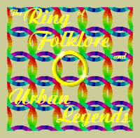
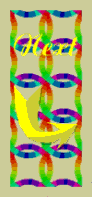

This Urban Legends and Folklore Ring site
is owned by __YOUR NAME__.
[ Prev | Skip It | Next 5 | Random | Next ]
Want to join the ring? Get the info.

|
|
This Urban Legends and Folklore Ring site is owned by __YOUR NAME__. [ Prev | Skip It | Next 5 | Random | Next ] Want to join the ring? Get the info. |
|

|  |
This Urban Legends and Folklore Ring site is owned by Ian Sanders. [ Prev | Skip It | Next 5 | Random | Next ] Want to join the ring? Get the info. |
 |
|
This ~Sun,
Moon & Stars~ site is owned by "Ian Sanders". Want to join the ~Sun, Moon & Stars~? |
|---|
| [Skip Prev] [Prev] [Next] [Skip Next] [Random] [Next 5] [List Sites] |
|
|
This Ring Around the
Moon Site |


|
|
This Silhouettes and
Shadows site Intrigued? Enter the Shadows! |
|
[ Previous 5 Sites | Previous | Next | Next 5 Sites | Random Site | List Sites ] | |
| The Children of the Moon | ||
| previous
moonchild O random moonchild |
 |
next
moonchild O list all moonchildren |
| Ian was born 11th
July |
| This Crosswinds Webring site owned by Ian (A.K.A. Pignut). | |
| Previous | Next | Next 5 Sites | Random | List Sites | |